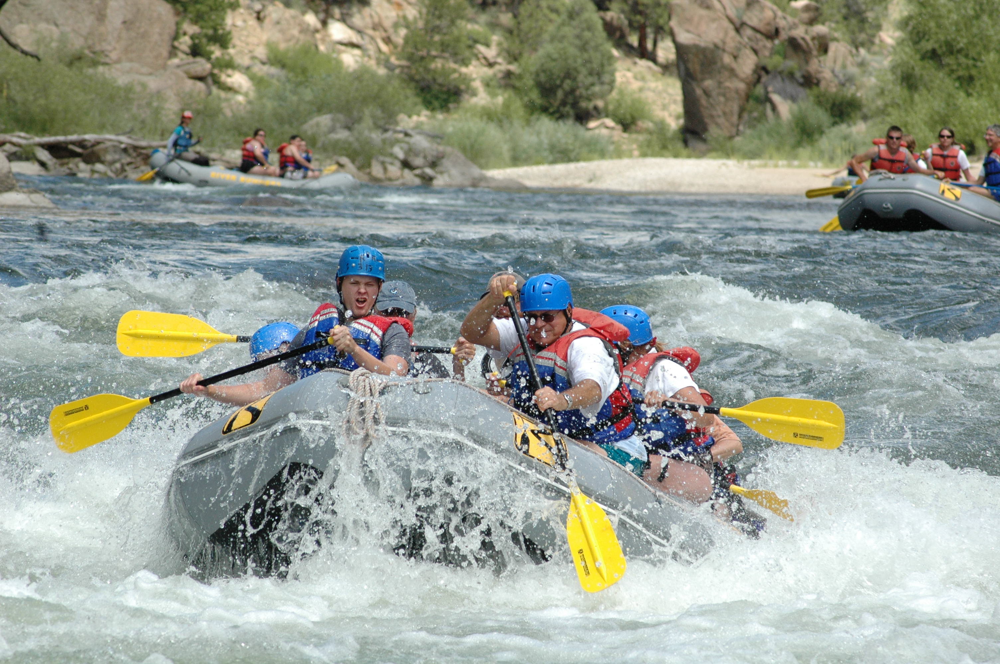

Ready to Book Your Adventure?
Get in touch with us to plan your next white water rafting experience!
Contact UsAmazon River Experience

Amazon Rainforest, South America
5 days
Advanced
Join us for an unforgettable adventure as we navigate the powerful currents of the Amazon River, surrounded by the lush greenery and diverse wildlife of the rainforest. Experience the thrill of conquering challenging rapids while immersing yourself in the natural beauty of one of the world's most iconic rivers.
Colorado River Experience
Colorado River, Western United States
4 days
Intermediate
Embark on a thrilling journey down the majestic Colorado River, where you'll encounter breathtaking canyons, exhilarating rapids, and stunning natural landscapes. This adventure is perfect for both beginners and experienced rafters, offering a mix of excitement and tranquility as you explore one of the most iconic rivers in the United States.
Salmon River Experience
Salmon River, Pacific Northwest
3 days
Intermediate
Immerse yourself in the pristine beauty of the Salmon River, known for its crystal-clear waters, rugged canyons, and abundant wildlife. This trip offers a perfect blend of excitement and serenity as you navigate through thrilling rapids and enjoy the tranquility of the surrounding wilderness. Join us for an unforgettable adventure on one of the most iconic rivers in the Pacific Northwest.